Tormenta, Dia das Mães
A relação de uma mãe com o filho adolescente. Ela diz que foi preciso coragem para aprovar.
ResultadoRecorde de vendas da data. Prêmios em Cannes, Effie e Clio.
dot.promo · inteligência de cliente · Grupo Boticário · 29/09/2026
Renata Gomide, VP de Marketing. Juliana Razini, Diretora de Franquias. Roberta Pepe, Gerente de Marketing Regional. Quem são, como pensam, como decidem e o que esperam de um parceiro.

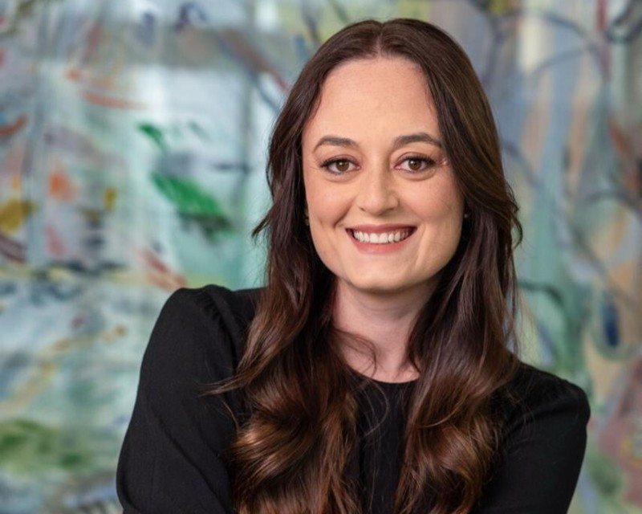
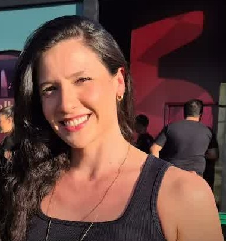
Fontes: LinkedIn público, Effie/Meio & Mensagem, Exame, Abramark (fev/2026), Fast Company (abr/2025). O título aparece como "VP de Consumer", "VP de Marketing" e "CMO" conforme o veículo. Confirmar a grafia no LinkedIn antes de imprimir qualquer material.
Atenção O Meio & Mensagem (2023) data a chegada dela como Diretora de Marketing da Eudora em 2019. Outras fontes e as falas dela apontam 2015. Não imprimir o ano sem confirmar.
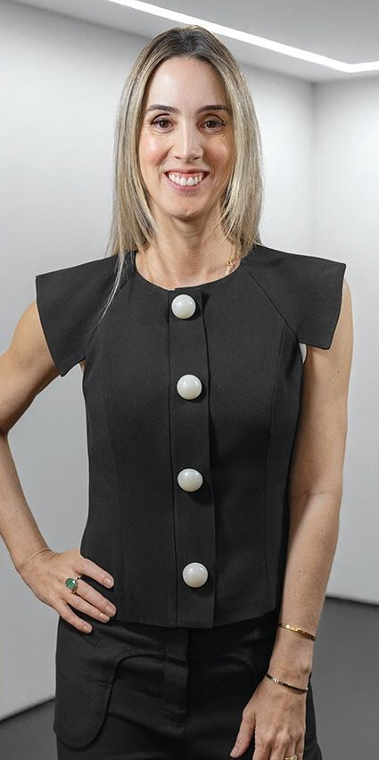
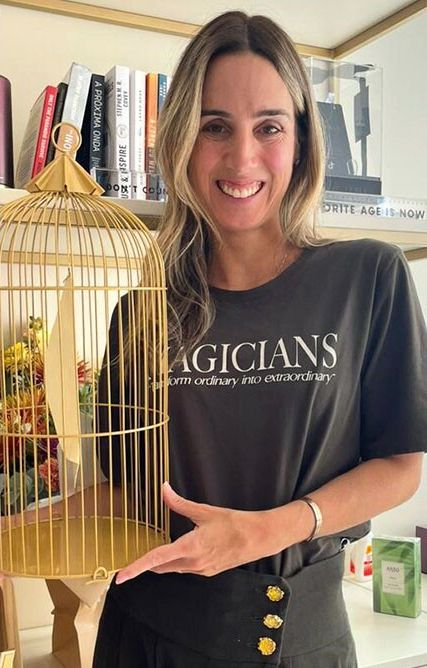
As falas em vídeo usadas neste dossiê. As de 2026 são as mais recentes sobre jornada, IA, regionalidade e liderança. Por escrito, vale ler também a entrevista da Abramark (fev/2026) e a do Meio & Mensagem sobre datas (mai/2024).
 JCDtalks · JCDecauxjul/2026 · jornada, out-of-home, Natal 2025, regionalidade
JCDtalks · JCDecauxjul/2026 · jornada, out-of-home, Natal 2025, regionalidade
 McKinsey Talks · Brasil Journaljul/2026 · crescimento, liderança, venda direta, 50 anos
McKinsey Talks · Brasil Journaljul/2026 · crescimento, liderança, venda direta, 50 anos
 10+10 · btrvaresemar/2026 · mesa de performance, CRM, IA agêntica
10+10 · btrvaresemar/2026 · mesa de performance, CRM, IA agêntica
 Perfil Profissional · Estadão Blue Studionov/2025 · carreira, tecnologia como meio
Perfil Profissional · Estadão Blue Studionov/2025 · carreira, tecnologia como meio
 Entrevista · Estadãoout/2025 · ganha-ganha com parceiros, Egeo Melancia
Entrevista · Estadãoout/2025 · ganha-ganha com parceiros, Egeo Melancia
 Desmarketize-se #09dez/2023 · o que não funciona, escassez e criatividade
Desmarketize-se #09dez/2023 · o que não funciona, escassez e criatividade
 Mídia & Marketing · UOLago/2023 · beleza, padrões e diversidade
Mídia & Marketing · UOLago/2023 · beleza, padrões e diversidade
Quatro frentes aparecem sempre: datas de marca com emoção (AlmapBBDO), causa com impacto cultural (GUT), produto nascido da comunidade e um varejo físico que ela trata como mídia. Por baixo de tudo roda uma máquina interna de dado, CRM, IA e teste.
A relação de uma mãe com o filho adolescente. Ela diz que foi preciso coragem para aprovar.
ResultadoRecorde de vendas da data. Prêmios em Cannes, Effie e Clio.

O ninho vazio, a partir de dado social: 64% da conversa sobre o tema é de tristeza.
Resultado40 milhões de views orgânicas em 5 dias, recorde da marca. Bronze em Film Craft, Cannes 2026.

Campanha pela ampliação da licença-paternidade.
ResultadoBronze em Glass, Cannes 2024, único Leão brasileiro na categoria.
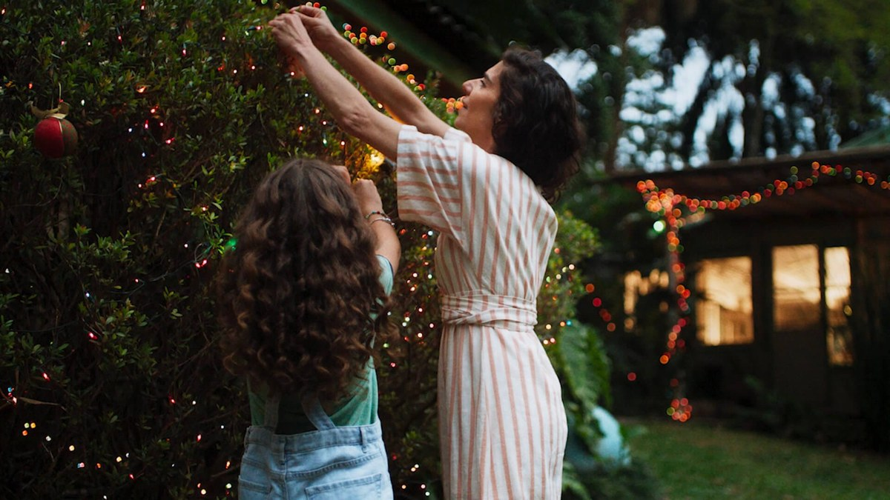
A partir da ideia de "intimidade artificial" de Esther Perel: pessoas abduzidas pelas telas. Estreia no intervalo de novela e show de drones.
ResultadoSem métrica pública. B9
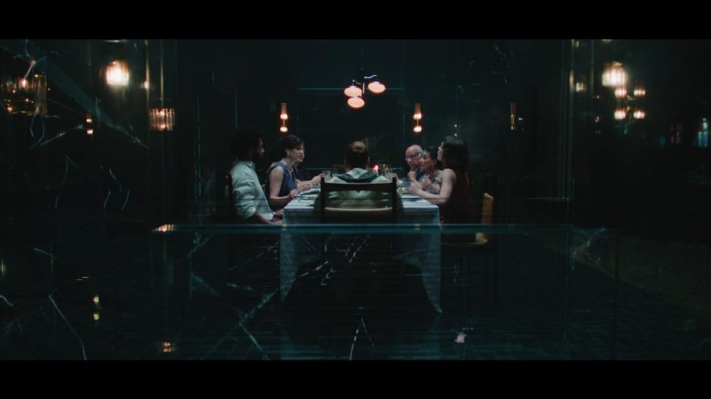
Curta sobre filhos que passam a cuidar dos pais.
ResultadoMaior produção da marca: 250 profissionais, 50 horas de gravação, 6 meses de pesquisa. Marcas pelo Mundo

"Presenteie com Amor": kits na esteira de bagagem de Guarulhos, cheiro de Malbec e out-of-home massivo com digital e TV.
ResultadoSegundo ela, o maior crescimento de negócio e de recall da data.
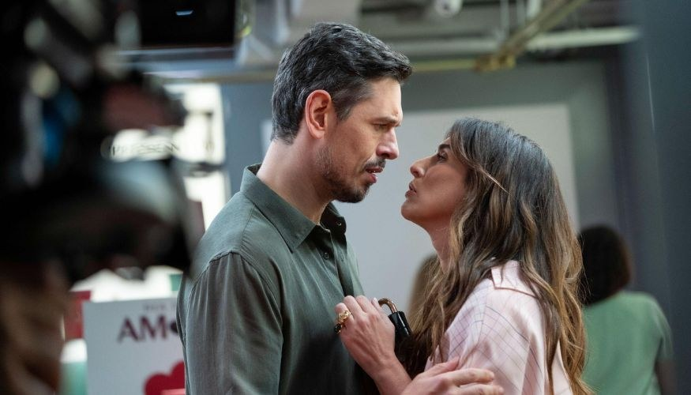
Com Fernanda Paes Leme e João Vicente: amor sem rótulo e humor leve.
ResultadoSem métrica pública. Acontecendo Aqui

Movimento de representatividade na formatura, a partir do capelo, com design da marca baiana Dendezeiro.
ResultadoBronze em Glass, Cannes 2025. Virou lei municipal em Salvador.

Criação do Centro de Pesquisa da Mulher, com filme estrelado por Deborah Secco.
ResultadoOuro em ODS, Cannes 2025.

Quatro marcas contra o skincare precoce, com Angélica e exibição no Fantástico.
ResultadoSelo "recomendado para peles adultas" nos produtos.

Bot contra a manipulação de imagens de mulheres por IA. Pela fala dela, o lançamento teve uma hora de bloqueio das telas de out-of-home.
ResultadoCannes 2026: Prata em Social & Creator e Bronze em Digital Craft.

Histórias de mulheres do Nordeste contadas em cordel, para Liz Sublime.
ResultadoSem métrica pública. É o precedente de linguagem nordestina na marca.

Bordão "Chega lá e Eudora", influenciadores e a criação do Dia do Batom. A imagem é do desafio com Juliana Paes.
ResultadoCrescimento de 60% a 80% nos primeiros anos. Hoje é a marca mais multicanal do grupo.

A comunidade do TikTok pediu e votou no cheiro. A ideia apareceu em 2023 e o lançamento foi em maio de 2024. Ago/2024: o unboxing das linhas Egeo e Cuide-se Bem Melancia bateu o recorde Guinness de maior unboxing simultâneo, com mais de 1.080 pessoas no Pavilhão da Bienal.
ResultadoEsgotou no e-commerce em 57 horas, com previsão de 14 dias (Consumidor Moderno).

Aceleradora de creators no TikTok: 10 em 2022, 300 vagas em 2023, prêmio de R$ 50 mil e protagonismo em campanha.
ResultadoSem métrica pública. Base da comunidade que depois cocriou produtos.

Patrocínio do time feminino de e-sports e presença dentro do jogo Avakin Life.
ResultadoEla diz que o Boticário virou a marca mais reconhecida no jogo.
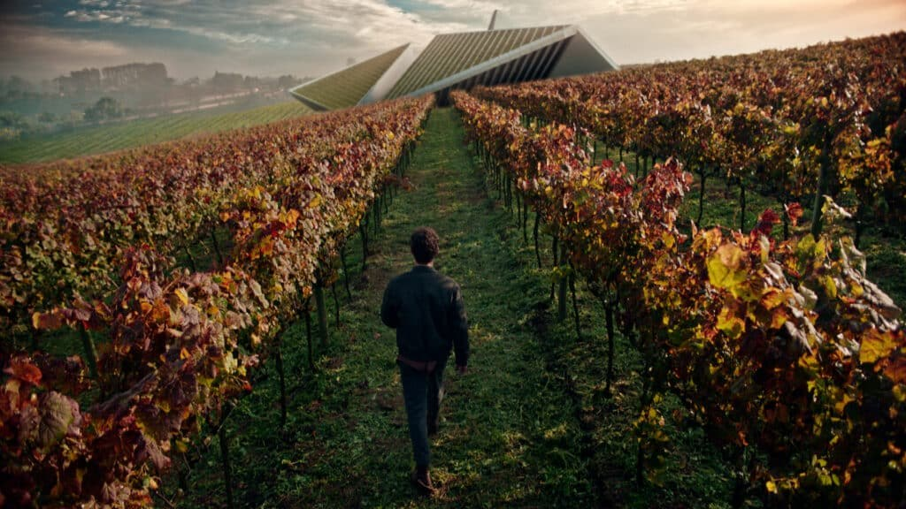
Frasco desenhado com a Pininfarina, com o piloto Felipe Drugovich, e a ativação Icon Ride com carro de luxo.
ResultadoSem métrica pública. Marcas pelo Mundo
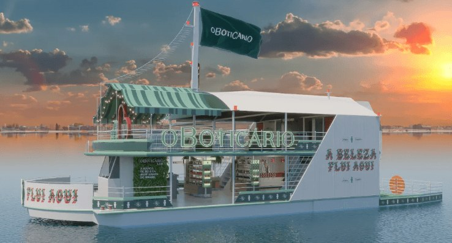
"Pará, a beleza flui aqui": um barco com Boticário Lab em Belém e show de Viviane Batidão.
ResultadoTrês fins de semana de operação. Adnews
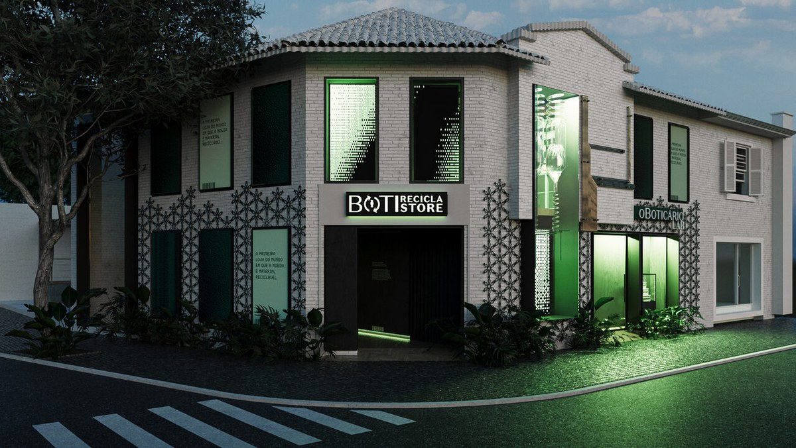
Loja temporária em Pinheiros onde embalagem vazia de qualquer marca vira moeda.
ResultadoTrês dias, com mínimo de 700 g por troca. Meio & Mensagem
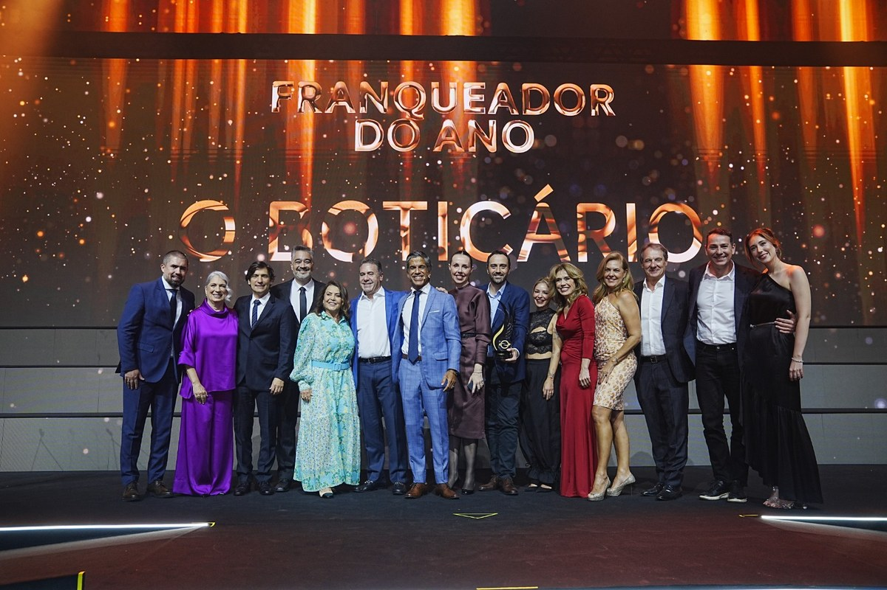
Prêmio ABF Destaque Franchising, recebido por Fabiano Olivo, diretor executivo de franquias.
ResultadoPrimeiro título em 16 anos. Mais de 1.600 cidades e cerca de 4 mil pontos. ABF
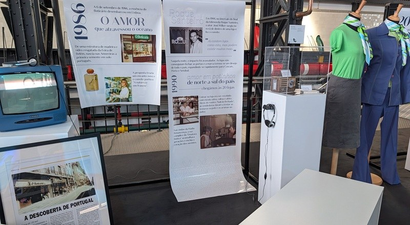
Campanha "Amo-te" nos 40 anos da marca no país, o maior mercado fora do Brasil.
ResultadoRecorde Guinness: 310 pessoas dizendo "amo-te". Hipersuper

Camarote na casa de Narcisa Tamborindeguy, em Copacabana. Antes teve Taylor Swift e Lollapalooza.
ResultadoSem métrica pública. É o precedente de experiência física de alto impacto.
| Quando | Case | O que foi | Resultado público |
|---|---|---|---|
| 2025 | Cuidar é coisa de pai | Dia dos Pais, AlmapBBDO. Volta à licença-paternidade. | 77% dos homens querem mais de 5 dias. O grupo dá 120 dias, e cerca de 1.097 homens usaram desde 2021 (Exame) |
| 2026 | Indiretas do Dia dos Namorados | Escuta das "indiretas" de presente, com a W3haus. | 147 mil conversas mapeadas (Imirante) |
| 2025 | Nativa SPA | Uva Merlot com Agatha Moreira e Orquídea Lumière com Isis Valverde. PROS e AlmapBBDO. | Sem métrica pública (Rondônia ao Vivo) |
| 2025 | Assistente de IA no e-commerce | Assistente no app inspirado nas consultoras, com AWS. | +46% de conversão no 1º mês e ticket +7,4% (Grupo Boticário) |
| 2026 | EssencIA | A IA lê o feed do Instagram e sugere a família olfativa; um perfumista fecha. AlmapBBDO e Meta AI. | IA em mais de 70 frentes internas (Grupo Boticário) |
| mai/2025 | Dias de Beleza | Mês de ofertas com mais de 15 horas de lives. | +649% em social commerce e e-commerce +169% no mês (Exame) |
Além dos cases acima, o grupo foi Anunciante do Ano no Effie Brasil 2025, com 10 cases premiados feitos com Almap, W+K e GUT. O Boticário é a marca mais premiada da história do Effie Brasil.
Fontes: Meio & Mensagem, Exame, Experience Club, Marcas pelo Mundo, Propmark, Roastbrief, B9, Adnews, ABF, Hipersuper, Estadão e palestra JCDecaux (jul/2026). Ativações regionais estão na seção 11. A lista completa está no rodapé. Onde aparece "sem métrica pública", o dado existe dentro do grupo mas não foi divulgado.
O ranking abaixo conta prêmios e presença em cases. Não existe ranking público de venda por agência. Inferência
Atende o Boticário desde 2004 e criou Tormenta, Instinto Paterno, Despedidas, Code Her e Cordéis. Teve 55 menções de finalista no Effie 2025 e ganhou Siàge e datas da Eudora. Para ela, a Almap é a guardiã da emoção nas grandes datas.
Fez Respeita Meu Capelo, Pesquise o Meu Corpo e o Pacto Skincare. É com ela que o grupo ganha Leão de Glass e ODS, ou seja, reputação e relevância cultural.
Comunidade, creators, CRM, IA e teste rápido ficam com o time próprio: o grupo tem mais de 2 mil pessoas em tecnologia. Ela diz que não usa agência para o que exige escala e corte rápido. Os melhores números de retorno direto (Egeo Melancia e o unboxing recorde) nasceram aqui.
SoWhat fez os camarotes de show. A PROS assinou as esteiras de aeroporto do Natal 2025, que ela contou no palco da JCDecaux como o caso de maior crescimento, e o lançamento de Nativa SPA. A Universal Music entra nos shows de projetos regionais.
W3haus nos dados do Malbec Icon e das indiretas de Namorados. LePub na BotiRecicla. AWS no assistente do e-commerce e Meta AI no EssencIA. Parceiro de tecnologia entra quando traz escala e prova.
Onde a dot. pode chegar. Os parceiros que ela exibe publicamente são os que geram conversa, prêmio e prova. Live marketing ainda não aparece como protagonista nas falas dela. Uma agência de experiência que chegue com conversa e dado junto do evento fala a língua desta lista. Inferência
Sintetizado a partir de oito falas dela em vídeo (2022 a jul/2026) e de mais de dez entrevistas escritas. Quase tudo abaixo é Fato, dito por ela.
Ela desenha tudo a partir da jornada do consumidor e diz que não existe funil, existe um ciclo. Cada meio precisa de papel e de métrica definidos antes da criação. Os meios se complementam por intenção (JCDecaux).
A mídia constrói marca, mas o criativo faz a diferença. A atenção é escassa e a marca precisa surpreender. Influenciador só com o produto na mão não basta: "ele quer ver história" (UOL).
"Sou obcecada em ler tudo o que as pessoas escrevem nas redes" (Exame). Antes o time brifava a agência; hoje o conteúdo nasce do listening (UOL).
"A consumidora é várias pessoas, e ela pode mudar" (Exame). Não basta produto bom: é preciso gerar valor e relevância cultural (Fast Company).
"A tecnologia não é fim, a tecnologia é meio" (UOL). Dado sem saber o que fazer com ele não adianta. "Não é sobre estar na próxima tecnologia hypada" (Exame).
Sobre IA, "quem falar que tá pronto tá mentindo". A nova fronteira é "fazer os agentes amarem nossas marcas", que ela chama de evolução do SEO. Diz ter economizado milhões com conteúdo feito com IA e estúdio próprio (10+10).
Ela separa o que é estruturante (Centro de Pesquisa da Mulher, ciclos da vida) do que é hype (Egeo Melancia). O hype ela testa e só mantém se continuar funcionando.
O Boticário é uma marca muito física. Loja é essencial em data, kit e mensagem emocional. O ganha-ganha vale para franqueado, fornecedor e agência (Estadão). Venda por catálogo "não vai acabar" (McKinsey).
Primeiro a grande mensagem nacional, depois a conexão regional, sem tropicalizar. Chega ao planograma: perfumaria mais fresca no Nordeste (Desmarketize). Out-of-home serve à marca regional pela segmentação e pela capilaridade.
"Como é que eu vou criar um produto para preto se eu não tenho pretos dentro de casa" (UOL). A beleza perfeita "não existe". Etarismo entrou na pauta com Seu Auge é Hoje e o Pacto Prateado (Meio & Mensagem).
"A gente sempre fala que é um looping. Não existe funil."Renata Gomide · palestra JCDecaux · jul/2026
As seis etapas são a leitura da dot. a partir das falas dela: "como descobre, como converte, o que consome, como consome"; "a marca na cabeça 24 por 7"; "ocasiões de vida"; escuta que vira produto.
| Etapa | Sinal da pessoa | Como medir | Exemplo do Boticário |
|---|---|---|---|
| 1Descobrir | Primeira vez que vê ou sente o produto | Alcance, awareness, recall | Presentes nas esteiras do aeroporto no Natal 2025 |
| 2Reforçar | Segue, salva, volta a ver, comenta | Frequência, consideração, engajamento | TV, out-of-home e creators se complementando |
| 3Comprar | Clica, vai à loja, usa voucher, resgata cupom | Conversão, fluxo em loja, cupom resgatado | Egeo Melancia: esgotou no e-commerce em 57 horas, com previsão de 14 dias |
| 4Usar | Usa nas ocasiões de vida: se arrumar, dia, noite, festa | Experimentação, recompra, base ativa | Serviço de make, perfume de dia, make à noite |
| 5Compartilhar | Posta, marca a marca, indica, dá de presente | UGC, menções, share of voice | Tormenta: a campanha mais compartilhada da história da marca |
| 6Escutar | Fala da marca, pede produto, cria tendência | Social listening, cadastros, base do programa de fidelidade | Comunidade do TikTok cocriou o Egeo Melancia |


"O Brasil tem quatro países dentro de um país só."Renata Gomide · McKinsey / Brasil Journal · 15/07/2026
Usar essas palavras naturalmente, sem forçar, sinaliza que a dot. fala a língua da casa.
Quase tudo aqui é Fato, dito por ela em vídeo ou entrevista.
"Não adianta eu construir já 4.000 lojas porque pode não funcionar." Testa pequeno e, quando o teste responde, "bota gasolina" (10+10). Produto que levava 2 anos sai em 1 mês.
Share em todas as categorias, recall, consideração, base ativa e KPIs de marca mais amada e de marca para presentear (Estadão). Em causa, mede profundidade de conversa.
CRM e performance: "não faz sentido fazer com agência" (10+10). Roda mais de 15 campanhas de CRM ao mesmo tempo numa mesa de performance. Na venda direta, a IA decide a promoção de cada pessoa para não dar desconto a quem já compraria.
A grande ideia de marca, a emoção das datas e a causa (Almap, GUT). Antes de contratar, clareza de mensagem: "se eu não sei o que eu preciso passar, não adianta ter um expert" (10+10). Não há fala pública dela sobre remuneração de agência.
"Gosto bastante de mudar as pessoas de cadeira." "Os líderes têm que confiar no time." "Se acontece de cima para baixo, não acredito no sucesso" (McKinsey).
O lema que o Experience Club registrou. Admite que "no passado, procurava pessoas muito parecidas comigo" e aconselha: "não terceirizem sua carreira" (Forbes).
"Agora a gente precisa fazer os agentes amarem nossas marcas."Renata Gomide · 10+10 · mar/2026
Diferenciação clara e mensagem definida antes da execução.
Meios que se complementam, cada um com papel e métrica.
Lugar de fala: quem vive o tema ajuda a construir.
Teste pequeno antes de investimento grande.
História, não produto na mão.
Aposta grande sem validação.
Estereótipo e padrão estético.
Tecnologia por moda.
Causa usada como onda.
A mesma ação repetida sem renovação.
Fontes: Grupo Boticário (2025), InfoMoney, Mercado&Consumo.
Visão de varejo e de marca ao mesmo tempo. Poucos CMOs juntam chão de loja (GPA, 4 mil lojas) com construção emocional premiada. Ela entende de conversão e de emoção.
Construtora. Fez a Eudora do zero. Sabe criar do nada, não só administrar marca pronta.
Velocidade com método. Levou o grupo do planejamento trienal para o tempo real, sem perder a construção de longo prazo.
Coragem calibrada. Aprova temas sensíveis (licença-paternidade, ninho vazio, cabelo, etarismo) e ganha com eles.
Líder de gente. Dá autonomia com limites, troca pessoas de cadeira e valoriza time diverso. Os diretores dela cresceram dentro de casa.
Eficiência. O CEO fala em "apertar parafusos" num mercado parado. O crescimento de 2025 foi um terço do de 2024.
Disputa apertada pela liderança. Pelo Euromonitor, em análise do Bradesco BBI (abr/2026), o Boticário tem 15,5% de participação contra 15,7% de Natura e Avon, a menor diferença da série.
Maior varejista de beleza do mundo em lojas. Euromonitor, mar/2026. Canal B2B com 160 mil pontos (+23%) e 40 mil salões (+33%).
Portugal é a vitrine externa. 61 lojas, mais de 38 mil revendedoras e presença na Amazon Espanha (Hipersuper).
Internalização. O que exige escala e dado ficou em casa. Parceiro externo soma com ideia, experiência e prova.
As três pessoas-chave são Renata Gomide, Juliana Razini e Roberta Pepe. O mapa mostra onde cada uma está e quem mais aparece em volta. Os vínculos de reporte são Inferência.


O que isso significa. Quando um projeto regional chega à mesa da Renata, a conversa sobe dois degraus: sai de Franquias e do regional e chega à VP que responde pela marca inteira. O critério muda de "ficou pronto e bonito" para "o que isso fez pela marca e pelo negócio". Marcela De Masi e Carolina Carrasco, se entrarem na conversa, são executivas de branding formadas no mesmo método. Inferência
Fontes: Propmark (24/06/2026), InfoMoney (jun/2026), Lagosul (12/06/2026), Jornal do Comércio RS (18/09/2026), Promoview, The Org. O LinkedIn dela não é indexado. Atenção A Gazeta do Acre (ago/2026) a chama de Gerente de Marketing Regional: é troca de nomes com a Roberta, não usar.
"A gente não quer ser uma loja de Curitiba que está no Nordeste."Juliana Razini · Propmark · 24/06/2026
Pertencimento real: gente, fornecedor e linguagem do lugar, não logo no evento.
Continuidade: projeto pensado para vários anos, com memória de edição para edição.
O franqueado da praça ganhando: fluxo, venda, protagonismo local.
Cadastro como prova, com número comparável entre praças e entre anos.
Eficiência e treinamento: processo claro para a rede executar.
Projeto bonito com pouco cadastro.
Proposta que trata uma região como bloco único.
Execução que gera retrabalho para a rede ou para o time dela.
Novidade que quebra uma construção de anos sem motivo.
Vocabulário dela: cultura, território, relações, consistência, envolver, traduzir, memória afetiva, acolhimento, casa.
Fontes: 89 A Rádio Rock, João Rock (12/08/2026), Marcas pelo Mundo (Eudora Siàge, 2024), Em Tempo (23/07/2026), Jornal do Brás, Enfoque MS, A Tribuna Regional, Live Marketing News, ZoomInfo (agregador). O LinkedIn /in/robertapepe é de uma homônima do Mercado Livre.
Ribeirão Preto (SP), 65 mil pessoas. Experiência olfativa com os lançamentos Malbec EDP e Floratta Red, jogos, cadastro no Beautybox e brindes de festival (A Tribuna Regional).
Manaus. Boti Club de Verão na Ponta Negra e Remada Ambiental no Igarapé do Gigante, que retirou 4 toneladas de resíduos nas duas edições anteriores. Investimento no Norte 54% maior (O Primeiro Portal).
Chapada dos Guimarães (MT) e Bonito (MS, 26 a 30/08). Ativação imersiva e fomento à cultura local (Sala da Notícia, Enfoque MS).
Santa Catarina. Experiência inspirada nos bastidores da dança (Live Marketing News).
Um mesmo kit de ativação que viaja por festivais muito diferentes, ajustado ao lugar. Continuidade é o argumento dela.
"A nossa grande estratégia é realmente criar conexões locais e ter uma relevância cultural."Roberta Pepe · 89 A Rádio Rock · ago/2026
Ativação aberta, participativa e fácil de entrar.
Produto de perfumaria no centro da experiência, principalmente lançamento.
Brinde pensado para o uso real no evento, não brinde genérico.
Cadastro embutido na mecânica, sem fricção.
Projeto com cara de ano 1 de vários, e com causa local quando couber.
Ideia que só funciona no papel e trava a operação no dia.
Cultura local usada como cenário, sem troca real com a cidade.
Entregável de patrocínio pouco claro.
Vocabulário dela: conexão local, relevância cultural, consistência, parceria de longo prazo, memórias, fomentar a cultura, fazer sentido.
Lacuna. Não há palestra, prêmio nem trajetória confirmada no nome dela. Nenhuma matéria a liga a Parintins, Carnaval ou Oktoberfest.
Elas não avaliam a mesma coisa. Uma proposta que agrada uma e ignora as outras perde. É preciso falar as três línguas na mesma apresentação.
VP de Marketing. Pergunta o que a ideia faz pela marca e pelo crescimento. Régua: jornada, recall, base ativa, teste e escala. Não tolera repetição nem investimento sem entender o que tem valor para o consumidor.
Franquias, treinamento e eficiência. Pergunta o que a ideia faz pelo franqueado e pela relação com a cidade. Régua: consistência de anos, envolvimento em vez de impacto, cadastro, marca que pertence ao lugar.
Gerente de Marketing Regional. Pergunta se a ativação faz sentido para quem está lá. Régua: conexão local, relevância cultural, brinde útil, cadastro, continuidade de edições.
Pelo que é público, os grandes projetos nordestinos saem pela voz de Franquias (Juliana) e os festivais de Sudeste, Centro-Oeste, Sul e Norte pela do marketing regional (Roberta). A Renata aparece quando o projeto vira exemplo de marca, como fez ao citar regionalização no palco da JCDecaux. Inferência
Ponto de atenção. Quem falou em nome do Carnaval 2026 foi Jacqueline Tobaru, Diretora de Marketing Regional, e não nenhuma das três. Pelo cargo, é provável que Roberta responda a ela. Vale confirmar se Tobaru também decide os próximos projetos. Inferência
A crença dela, "o Brasil tem quatro países dentro de um", vira calendário: festa popular, festival e verão de cada região, quase sempre com vários anos seguidos.
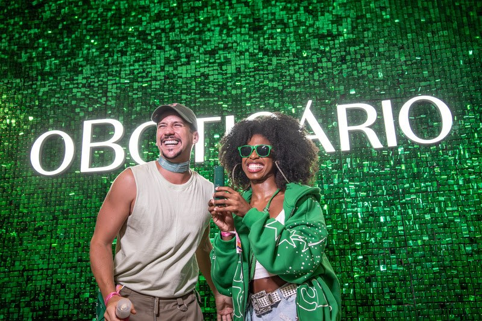

| Região e festa | Desde | O que é | Número público | Porta-voz |
|---|---|---|---|---|
| Carnaval (Salvador, Recife, BH, Rio, SP) | ed. 2026 | 15 ativações em 3 pilares: rua, premium e CRM Beautybox. Malbec Black Legend e Her Code Tríade (Promoview) | sem número | Jacqueline Tobaru |
| Parintins (AM) | 2018 | Marca de beleza oficial em 2024, Clube Kwati e sampling no Bumbódromo (Promoview) | previsão de 120 mil visitantes | não informado |
| Verão no Norte (PA, AM, TO, AP, RO) | 2023 | Verão Amazônico em Manaus e quiosques Boti Verão (Portal Rondônia) | 52,1% dizem que é a marca favorita do Norte (Kantar) | Roberta Pepe |
| São João (Nordeste) | 2017 | Casa Boti em Caruaru, Campina Grande, Mossoró e outras praças (Promoview) | 2,5 bi de impressões em 10 anos; marca de beleza preferida da festa (Kantar 2025) | Juliana Razini |
| Festivais de Inverno (MT, MS) | 2023 | Chapada dos Guimarães e Bonito, com fomento à cultura local | 4º ano | Roberta Pepe |
| João Rock (SP) | 2024 | Experiência olfativa com lançamentos | 65 mil pessoas | Roberta Pepe |
| Rio Grande do Sul | 2025 | "A beleza de ser gaúcho", Casa Boti no Cais Embarcadero | 9 mil conversas de escuta na origem | Juliana Razini |
"Desde" foi calculado a partir do número da edição citado em cada matéria de 2026 (ex.: 4º ano em 2026 indica início em 2023). Inferência Renata citou o São João como exemplo de regionalização bem feita, com metrô adesivado e extrapolação para o digital (palestra JCDecaux, jul/2026).
O padrão. Presença de vários anos, lançamento de perfumaria no centro, cadastro no Beautybox como prova e cultura local como conteúdo. A régua é recall, base ativa e venda na loja da praça.
Vale para data comemorativa, lançamento, evento, loja ou ativação regional. A lógica é a mesma: consumidor primeiro, papel na jornada, prova no fim.
Abrir com um dado do consumidor que elas ainda não conhecem.
Mostrar resultados anteriores por praça ou por ação, inclusive os ruins.
Falar de região com propriedade: cidade por cidade, e não "o Nordeste" ou "o Norte".
Trazer acessibilidade e diversidade como padrão de projeto, não como anexo.
Ser curto. Ela opera com atenção escassa e pede surpresa.
Abrir com credencial da agência, portfólio ou prêmio.
Vender "ativação", "estande" ou "experiência imersiva" sem dizer o que isso gera.
Repetir um formato de sucesso sem renovação.
Usar IA ou tecnologia como enfeite.
Defender o acabamento quando a pergunta é eficiência.
Este dossiê usa só informação profissional pública. Nada sobre vida pessoal foi levantado.